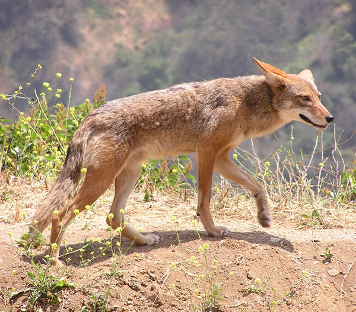

ele é um animal mamífero carnívoro da família dos canídeos, nativo da América do Norte Central. Seu porte é médio, ele é um animal conhecido pela sua inteligência, é um predador oportunista que vocaliza através de uivos e latidos agudos.
Coyote é o famoso animal mudo da Warner Bros. Ele vive no deserto tentando capturar o Papa-Léguas usando planos absurdos e produtos defeituosos da marca ACME. Devido ao azar e à física dos desenhos, todas as armadilhas falham, e ele sempre acaba explodido ou caindo de penhascos.
